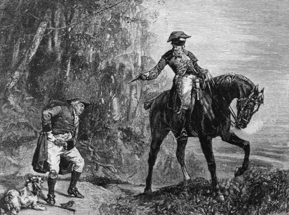
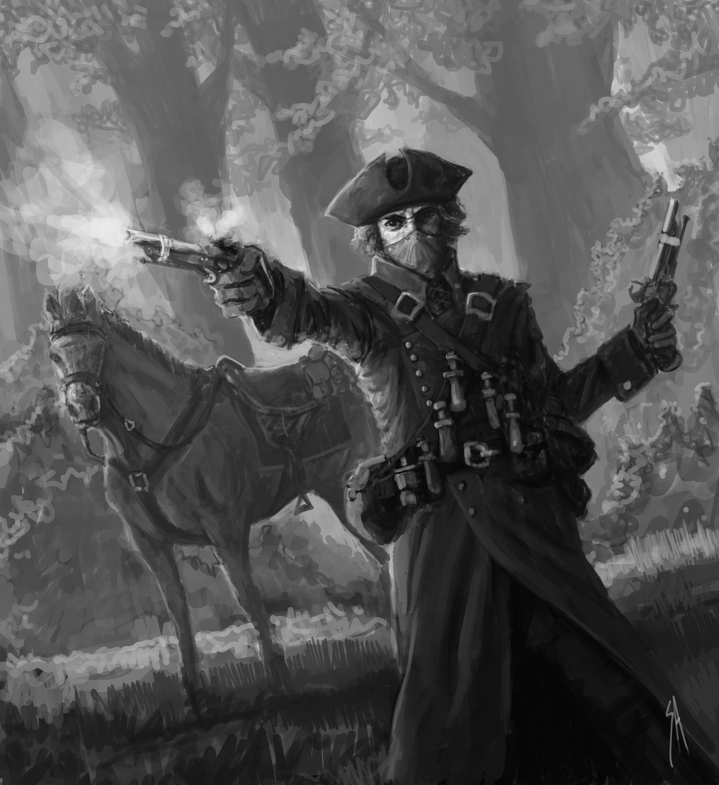

Whiskey in the Jar



As I was going over the far famed Kerry mountains
I met with Captain Farrell and his money he was counting.
I first produced my pistol,and then produced my rapier.
Said stand and deliver, for he were a bold deceiver,
Mush-a ring dum-a do dum-a da
Whack for my daddy-o
Whack for my daddy-o
There's whiskey in the jar
I counted out his money, and it made a pretty penny.
I put it in my pocket and I took it home to Jenny.
She said and she swore, that she never would deceive me,
but the devil take the women, for they never can be easy
I went into my chamber, all for to take a slumber,
I dreamt of gold and jewels and for sure it was no wonder.
But Jenny took my charges and she filled them up with water,
Then sent for Captain Farrel to be ready for the slaughter.

It was early in the morning, just before I rose up for travel,
The guards were all around me and likewise Captain Farrel.
I first produced my pistol, for she stole away my rapier,
But I couldn’t shoot the water so a prisoner I was taken.
Now there's some take delight in the carriages a-rollin'
And others take delight in the hurling and the bowling
But I take delight in the juice of the barley
And courting pretty fair maids in the morning bright and early
If anyone can aid me 'tis my brother in the army
If I can find his station in Cork or in Killarney
And if he'll go with me, we'll go rovin' through Killkenny
And I'm sure he'll treat me better than my own a-sporting Jenny